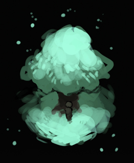
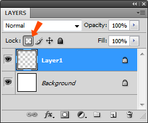
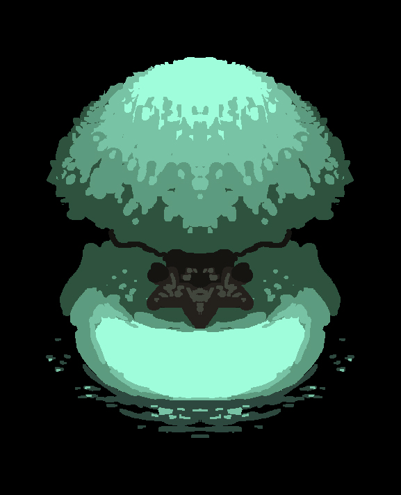
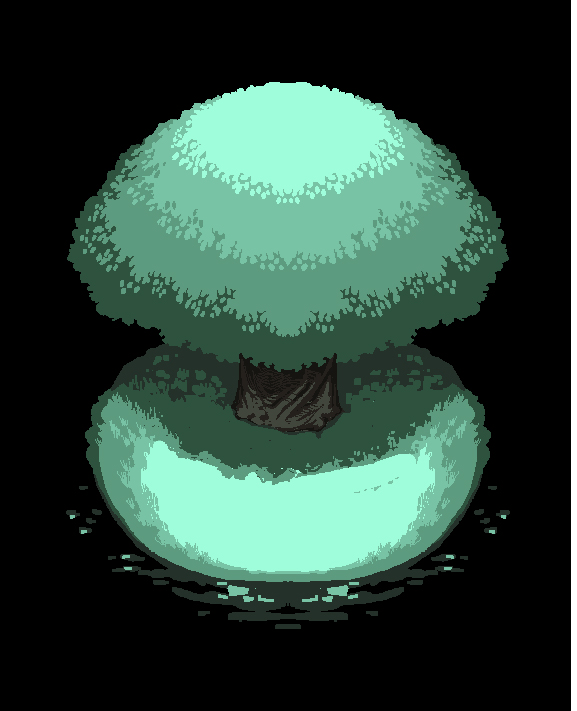
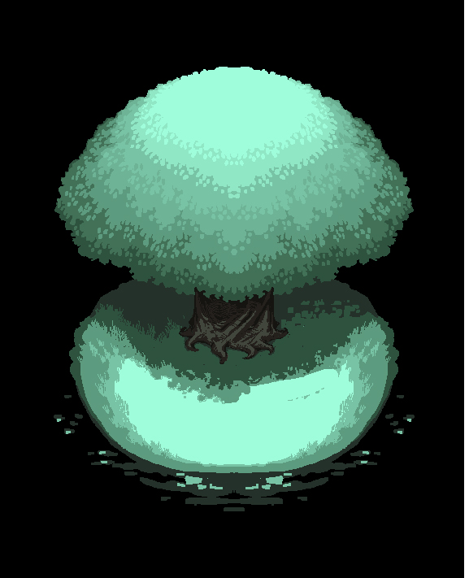
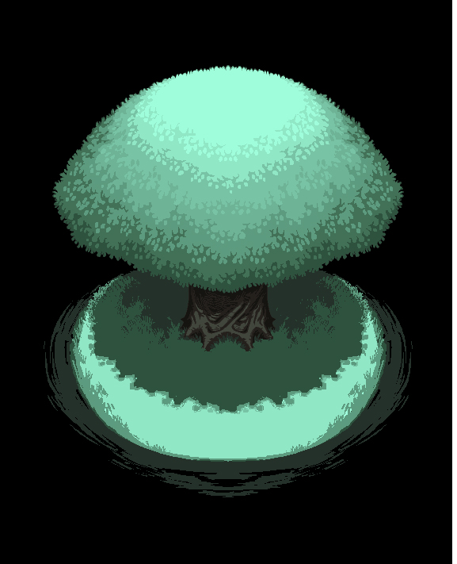
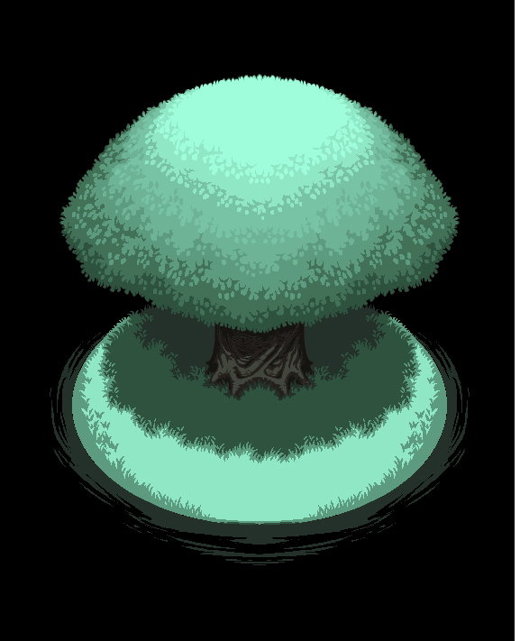
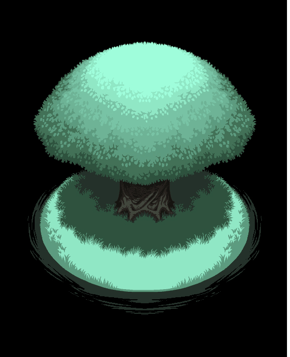
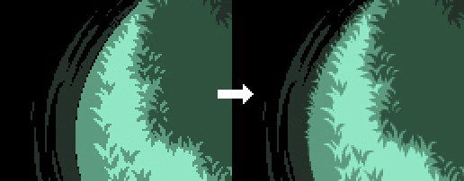

Making of : un arbre pour Lije
Suite à des remarques qu'on nous a faites sur le site, j'ai pensé que cela pourrait être une bonne idée de présenter des making of pour illustrer les articles que nous avons écrits sur le graphisme. Il ne s'agit pas bien sûr d'exemples à imiter, mais de présenter une façon de travailler et d'essayer de mettre le doigt sur quelques éléments de réflexion. Si vous avez des remarques, critiques ou commentaires, je suis bien évidemment tout ouïe !

Pour ce premier essai, j'ai choisi de vous présenter le making of d'un arbre qui apparaît dans le prologue de Lije, pour lequel je suis responsable des décors. Il s'agit de pixel art, bien évidemment, mais plutôt grande résolution, où j'essaye de travailler au maximum en à-plats (ce qui exclut par exemple le dithering).
Pour commencer, j'ai réalisé un rapide concept art pour avoir une idée de là où je voulais aller, en matière d'ambiances, de formes et de couleurs.

C'est très simple, voire grossier, mais ça me donne une bonne idée de ce à quoi l'écran ressemblera une fois le jeu lancé. J'ai une idée de la palette que je vais utiliser et de la forme des éléments.
Je travaille sur un fond noir car l'arbre apparaîtra sur un fond noir dans le jeu : je peux donc avoir une meilleure idée du rendu final et je peux anti-aliaser de l'arbre vers le fond sans risque. En général, j'essaye de travailler avec la couleur du fond telle qu'elle sera dans le jeu et si jamais l'élément peut apparaître différents backgrounds, je travaille sur un fond gris neutre (#808080) et je n'anti-aliase pas.
La première chose que je fais, c'est de poser les à-plats les plus importants. Ici : le fond, le feuillage, l'herbe, le tronc. J'essaye d'être assez propre, pour pouvoir sélectionner les différentes zones et travailler dessus séparément, sans « déborder . On peut utiliser l'outil Baguette Magique pour sélectionner un à-plat ou même séparer les à-plats en différents calques verrouillés. Je rappelle au passage l'intérêt du verrouillage pour ne pas déborder, c'est vraiment très utile.

Pour poser les à-plats, je place le concept art, redimensionné pour coller avec l'échelle des personnages, à faible opacité (en général 30%) et je travaille sur un autre calque vide, placé au-dessus. De cette façon, le concept art me sert de guide : c'est particulièrement utile si votre concept de base est précis.

Je me sers ensuite des à-plats (verrouillés ou sélectionnés) pour poser grossièrement les ombres et les lumières. J'ai choisi une lumière zénithale, censée conférer une note sacrée à la scène. J'essaye de ne pas faire de pillow shading et de donner, dès le départ, un bon volume à l'arbre. Je n'ajoute pas trop de détails pour l'instant et je travaille avec une grosse brosse en mode pixel, avec variation de taille mais pas d'opacité (essentiel pour le pixel art !).

Je me permets maintenant de déborder des calques. Je commence à travailler à la brosse taille 1 pixel, c'est-à-dire que je commence à vraiment faire du pixel art. Je veille à bien conserver les grands à-plats de couleur et je travaille surtout sur les transitions entre les zones : je trace le feuillage, en essayant de rendre les feuilles par une découpe des zones d'ombre, je commence à créer une texture d'herbe en « grattant », je redessine le tronc (qui faisait trop A Link To The Past à mon goût) et je lui donne une texture (à la fois avec des à-plats dirigés pour rendre le mouvement de torsion du tronc et en grattant pour rendre le côté rugueux de l'écorce). Remarquez que j'utilise la symétrie sans aucun remords, ça me fait gagner un temps fou.
Vous noterez que j'ai rajouté une zone d'ombre supplémentaire sous l'arbre. J'ai repris pour cela la couleur du reflet sur le fond noir : dans la mesure du possible, j'essaye de réutiliser mes couleurs à plusieurs endroits différents et pas seulement d'utiliser une rampe pour chaque élément. Cela me permet de mieux « marier » les différentes couleurs.

Je rajoute des couleurs de transition à ma palette, essentiellement des verts. Je les utilise pour adoucir le rendu de l'arbre avec de nouvelles « couches » de feuilles et je compte m'en servir plus tard pour faire de l'anti-aliasing. J'ai essayé de mettre des racines sous l'arbre et je supprime quelques taches de couleur pour agrandir les à-plats.

En général, c'est le moment où je demande un avis extérieur (et même plusieurs) pour prendre un peu de recul (et c'est aussi l'occasion de faire une pause !). Avec ces conseils en poche et un peu plus de distance vis-à-vis de mon travail, je regarde mieux et je constate que plusieurs choses ne vont pas. Je reprends donc les affreuses racines que j'avais faites (je suis tombé pile poil dans les travers décriés par le cours de Fil), je redessine la forme de l'île, je retrace l'ombre portée de l'arbre et j'en profite pour dessiner proprement les vaguelettes autour de l'île. Bref, je remets ça au propre. Au passage, je raffine le contour du feuillage de l'arbre et je l'anti-aliase, de façon à ce que la transition vers le fond soit plus fine.

Je dessine maintenant proprement les brins d'herbe. Je ne veux pas de texture, donc je me contente de les dessiner à la transition, brin par brin. J'y vais proprement, à la brosse taille 1 pixel, car je veux que ces contours soient définitifs. Je soigne particulièrement la façon dont les brins d'herbes passent devant le tronc d'arbre et les racines, de façon à montrer que l'arbre est bien planté dans le sol et pas juste « posé » par dessus.

Pour finir, je peaufine les transitions avec de l'anti-aliasing : j'en applique sur les différents brins d'herbe et je dessine des brins sur le bord de l'île, pour qu'ils dépassent sur le fond et donnent une impression de superposition plutôt qu'une impression de juxtaposition. Je finis d'anti-aliaser le bord de l'île et c'est bon !

Je me suis arrêté ici pour des raisons de temps (la démo de Lije devant sortir pour les Alex d'Or), c'est pourquoi je n'ai pas plus poussé le rendu du feuillage. Je sais qu'il ne s'agit pas exactement de pixel art (dans la mesure où la résolution est très grande), mais j'ai essayé d'en utiliser les techniques : palette limitée (12 couleurs), anti-aliasing à la main, à-plats, etc. Voici donc une idée de comment j'ai réalisé ce bout de décor. Ce n'est pas forcément très ordonné et le résultat pas forcément exceptionnel, mais j'espère que cela illustre un peu mieux les cours de pixel art du site !
Ajouter un commentaire
Commentaires

Best game ever :p

Je me demande si c'est raisonnable de parler de pixel art à ce niveau là…
Résultat très impressionnant et cet arbre est spendide ! Intéressant de voir les différentes étapes, même si le niveau est carrément élevé. Imp'